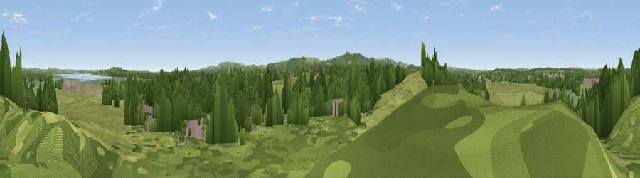

Viewpoint near Ridge
#31900 in England · top 68% of its area beats it · near RidgeThe view, rendered

A 360° render of this exact spot computed from the terrain model, tree cover and land cover — summer colours, afternoon light, calibrated against photographs of famous viewpoints. Real trees, hedges and buildings will differ in detail.
The panorama
Grey silhouette: terrain skyline in each direction (720 bearings, Earth curvature and refraction included). Dashed green: skyline with trees (+15 m) and buildings (+8 m) as obstacles. Blue strip: how far the ground is visible on each bearing.
Where the view opens
Wedge length = distance to the farthest visible ground on that bearing (vegetation-aware). Rings at 10, 25 and 50 km.
What fills the view
55% grassland · 34% woodland · 6% wetland · 4% built-up ·
Angular shares of the visible panorama (visual magnitude), not map area. Landscape diversity 0.46 (0–1 Shannon).
Key numbers
More beautiful places nearby
The staircase of upgrades: each row has a higher view potential than everything closer. Driving times are estimates from straight-line distance, calibrated against real road routing — check an actual route before setting out.
| Place | Direction | Drive | Score |
|---|---|---|---|
| Viewpoint near Arne | ENE · 4 km | ~9 min | 48.4 |
| Viewpoint near Arne | ENE · 4 km | ~10 min | 55.2 |
| Viewpoint near Kimmeridge | SSW · 5 km | ~11 min | 82.9 |
| Viewpoint near Kimmeridge | SSW · 5 km | ~11 min | 84.1 |
| Viewpoint near Kimmeridge | S · 7 km | ~14 min | 86.6 |
| Viewpoint near Kimmeridge | S · 8 km | ~17 min | 87.5 |
| Viewpoint near Abbotsbury | W · 37 km | ~56 min | 89.0 |
| Viewpoint near West Bexington | W · 38 km | ~57 min | 89.5 |
50.67789, -2.09654 · source: screening · position refined by local search. Computed location — check access rights before visiting.